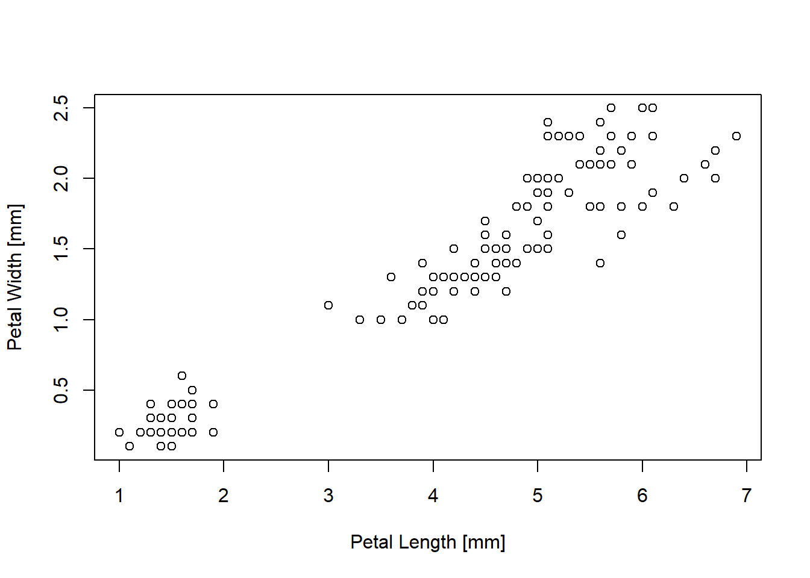
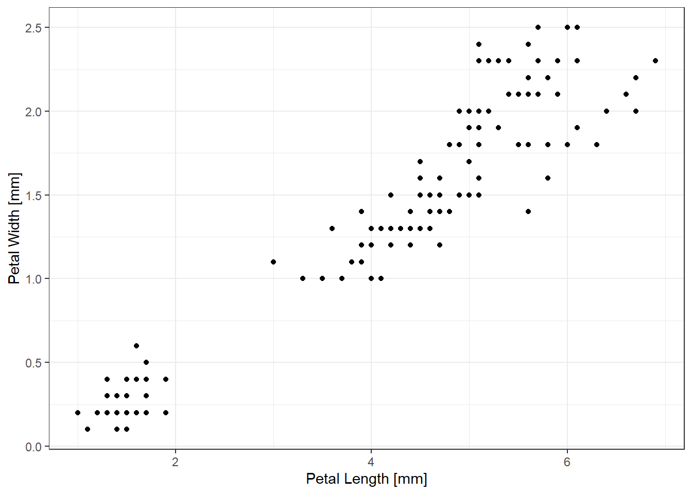

library(ggplot2)
library(dplyr)A guide to making basic plots in R
Making good plots requires researchers to be well-informed about ways to best communicate their data. Below, I’ll provide a quick guide for making plots for different types of data. Like most of this course, this information is far from exhaustive. Yet, it might provide a good launching pad to explore ideas. Other good resources for making nice plots are the R graph gallery, and asking ChatGPT.
In this example, I’ll use ggplot2, so if you are interested in recreating these figures in your own machine, make sure to load the package. However, I’ll also display how the plot() function in R allows for versitile and quick plotting. This can be used to get a quick idea about how to best plot your data. We’ll also use dplyr
Scatterplot: Assessing continuous relationships
A scatterplot is probably a plot you are familiar with. This type of figure is excellent for comparing two continuous variables and assessing their relationship. This type of figure likely can be paired with a correlation analysis or a linear regression.
For these examples, I will be using the iris dataset. This is a default example dataset which is already loaded in R. Take a look below at its structure. We have three species of flowers from the Iris genus: I. verginica, I. versicolor, and I. setosa. There are 50 observations of each of the species with corresponding measurements for sepal length, width and petal length and width.
DT::datatable(iris)Thus, in the dataset, we have a categorical variable (Species), with three levels. We also have four continuous variables.
The simplest form:
Base R plotting
Plotting in base R allows for a similar format to many of the functions you’ll see in the stats package where you can use what I call “formula” structure. That is, rather than specifying the x and y axis, you can specify a relationship with ~.
plot(Petal.Width ~ Petal.Length, data = iris,
xlab = 'Petal Length [mm]',
ylab = 'Petal Width [mm]')
# The same plot could be achieved with
# plot(iris$Petal.Width ~ iris$Petal.Length)
# plot(y = iris$Petal.Width, x = iris$Petal.Length)ggplot approach
plotting in ggplot may seem a little more complicated. However, in the long-run it facilitates better looking graphics with easier-to-read code. The fundamental idea behind ggplot is using geoms, which are plotting objects (called by functions) to make a particular type of plot. In a geom function, there is a similar layout where plotting objects can be called using aes() where users specify x and y values. Similar to base R plotting, the data argument can be utilized to avoid specifying each value with $. Learning ggplot can be particularly tricky because of the range of ways to format the code and produce the same plot. I have very particular reasons for my preferred method but I won’t divulge them all here.
Another great feature of ggplot is the built in theme functions. These can allow you to quickly clean up the plot an make the features all look the same! In this guide, I’ll rely on theme_bw(). However, in most my work, I use theme_pubr() from the ggpubr package, with customization in theme(). Explore around with the themes for your own purposes!
ggplot(data = iris)+
geom_point(aes(x = Petal.Length, y=Petal.Width))+
labs(x = 'Petal Length [mm]', y = 'Petal Width [mm]') +
theme_bw()
# same as:
# ggplot(data = iris, aes(x = Petal.Length, y = Petal.Width))Adding to the scatterplot
Trendlines:
Scatterplots can be greatly improved by adding features. For example, we might want to add a trendline to the figure. These can be useful for demonstrating a linear replationship between the variables.
In baseR, we need to use the abline() function. This function requires you to specify the linear relationship. Fortunately, we can just feed it a model object. Here, I use lm() inside the abline function. However, if you defined your linear model elsewhere, you can put that object in place.
plot(Petal.Width ~ Petal.Length, data = iris,
xlab = 'Petal Length [mm]',
ylab = 'Petal Width [mm]')
abline(lm(Petal.Width ~ Petal.Length, data = iris))Personally I find ggplot a bit more flexible for making trend lines. We can use geom_smooth() or stat_smooth(). By default, this function will create a smoothed trend line (the exact smoothing default varies based on the data):
ggplot(data = iris)+
geom_point(aes(x = Petal.Length, y=Petal.Width))+
geom_smooth(aes(x = Petal.Length, y=Petal.Width))+
labs(x = 'Petal Length [mm]', y = 'Petal Width [mm]') +
theme_bw()However, we can change the smoothing method to fit whatever trendline we want. Here, we can use ‘lm’. I also usually like to get rid of the error line with se = F:
ggplot(data = iris)+
geom_point(aes(x = Petal.Length, y=Petal.Width))+
geom_smooth(aes(x = Petal.Length, y=Petal.Width),
method = 'lm', se = F)+
labs(x = 'Petal Length [mm]', y = 'Petal Width [mm]') +
theme_bw()Coloring by group:
Color can be a great tool to add to scatterplots to give context to the data or display a third dimension.
We can first look at grouping by species:
In base r we can use the col argument. I’m also going to add a legend but it is a bit trick to do this in base R:
plot(Petal.Width ~ Petal.Length,
col = Species,
data = iris,
xlab = 'Petal Length [mm]',
ylab = 'Petal Width [mm]')
legend('bottomright', legend = unique(iris$Species),
col = c('black','red', 'green'), pch = c(20))
abline(lm(Petal.Width ~ Petal.Length, data = iris))The above plot is OK, but we’re starting to hit the wall of base R graphics. In ggplot, we can make the same figure but we can add some better features. For example, group-specific trend lines!
ggplot(data = iris,
aes(x = Petal.Length, y=Petal.Width,
color = Species))+
geom_point()+
geom_smooth(method = 'lm', se = F)+
labs(x = 'Petal Length [mm]', y = 'Petal Width [mm]') +
theme_bw()Color by a continuous factor:
We could also color by a continuous variable. In the iris dataset, this is not the most useful approach. However, I’ll demonstrate here with coloring by Sepal.Width. I’ll also change the color scale to make it more visible using the scale_color_diverge() function.
ggplot(data = iris,
aes(x = Petal.Length, y=Petal.Width))+
geom_point(aes(color = Sepal.Width))+
geom_smooth(method = 'lm', se = F)+
scale_color_gradient(low = 'grey', high = 'black')+
labs(x = 'Petal Length [mm]', y = 'Petal Width [mm]') +
theme_bw()More factors!
We could also use size to communicate a fourth dimension. Again, the iris dataset may not really require this feature. However, I’ll use the Sepal.Length as a bubbling element for demonstration purposes. If you are paying attention, you’ll notice I’m moving around where I assign the aesthetic mappings (aes()). I also added a transparency value to the points (alpha).
ggplot(data = iris,
aes(x = Petal.Length, y=Petal.Width))+
geom_point(alpha = 0.7, aes(size = Sepal.Length,
color = Sepal.Width))+
geom_smooth(method = 'lm', se = F)+
scale_color_gradient(low = 'grey', high = 'black')+
labs(x = 'Petal Length [mm]', y = 'Petal Width [mm]') +
theme_bw()Correlogram
Correlograms are great ways to assess multiple relationships at once. There’s some great packages to make nice figures for theses. However, base R offers a quick way to assess multiple relationships at once. Here we can use the first four columns of the iris dataset to see how each individual variable is related to one another.
plot(iris[,1:4])
We can calculate the correlation matrix for each of those values using cor()
cor(iris[,1:4]) Sepal.Length Sepal.Width Petal.Length Petal.Width
Sepal.Length 1.0000000 -0.1175698 0.8717538 0.8179411
Sepal.Width -0.1175698 1.0000000 -0.4284401 -0.3661259
Petal.Length 0.8717538 -0.4284401 1.0000000 0.9628654
Petal.Width 0.8179411 -0.3661259 0.9628654 1.0000000Line Plots: Assessing continuous change
Line plots are similar to scatterplots. However, in a scatterplot there isn’t necessarily an implied relationship that is continuous across the x-axis. A line plot is typically used for time or some other variable which through which we imply that change change did occur over that variable, even if not observed.
To demonstrate the lineplots, we’ll use the ChickWeight dataset. This is the growth of 50 chicks over 21 days (measured every day). The chicks were given four different diets.
DT::datatable(ChickWeight)The “raw” approach.
A raw line plot in the case would be a bit chaotic. Given that there are 50 separate chicks, each with their own growth time series, this would mean 50 different lines. However, let’s look at it just for fun:
base R:
In base R, we can utilize the type = argument to specify the plot to make. Here, we want a line plot so we tell it ‘l’.
plot(weight ~ Time, ChickWeight,
type = 'l',
xlab = 'Days Since Hatching',
ylab = 'Weight [g]')
ggplot:
In ggplot, we’ll rely on the geom_line() function to make a line plot
ggplot(data = ChickWeight)+
geom_line(aes(x = Time, y = weight, group = Chick))+
labs(x = 'Days Since Hatching', y = "Weight [g]")+
theme_bw()Summarizing the data
As discussed in the general expectations, a good plot should offer a summary of the data. So here, we can average the chick weights to show a better summary of the data.
Summary by all chicks
all_chicks <- ChickWeight |>
group_by(Time = Time) |>
summarize(mean_weight = mean(weight),
se_weight = sd(weight)/sqrt(nrow(ChickWeight)))Now we can use that data to make a plot of the average chick growth across time, regardless of diet:
In Base R:
for the base r case, I’m going to use both points with lines that way we can show the standard error
plot(mean_weight ~ Time, all_chicks,
type = 'b',
xlab = 'Days Since Hatching',
ylab = 'Mean Weight [g]')
arrows(x0 = all_chicks$Time,
x = all_chicks$Time,
y0 = all_chicks$mean_weight - all_chicks$se_weight,
y = all_chicks$mean_weight + all_chicks$se_weight,
angle = 90, length = 0.075, code = 3)In ggplot:
There’s two nice ways to make this figure in ggplot. We can use the point-and-line method as shown above or we can use ribbons for standard error.
ggplot(all_chicks,
aes(x = Time, y = mean_weight))+
geom_point()+
geom_errorbar(aes(ymin = mean_weight - se_weight,
ymax = mean_weight + se_weight))+
geom_line()+
labs(x = "Days Since Hatching",
y = 'Mean Weight [g]')+
theme_bw()ggplot(all_chicks,
aes(x = Time, y = mean_weight))+
geom_line(size = 1)+
geom_ribbon(aes(ymin = mean_weight - se_weight,
ymax = mean_weight + se_weight),
size = 1,
fill = 'grey', alpha = 0.7)+
labs(x = "Days Since Hatching",
y = 'Mean Weight [g]')+
theme_bw()Summary by diet
The nature of this dataset really implies we should be investigating how growth varied based on diet. So let’s look at the data grouped by diet. I’m only going to do this in ggplot at this point and jump to the final figure, but we build on the figures above!
chicks_by_diet <- ChickWeight |>
group_by(Time = Time, diet = Diet) |>
summarize(mean_weight = mean(weight),
se_weight = sd(weight)/sqrt(nrow(ChickWeight)))For this ggplot, I’ll just use the ribbon approach. Pay attention to the details here. Note that lines require color arguments while ribbons require fill.
ggplot(chicks_by_diet,
aes(x = Time, y = mean_weight))+
geom_line(size = 1, aes(color = diet))+
geom_ribbon(aes(ymin = mean_weight - se_weight,
ymax = mean_weight + se_weight,
fill = diet),
size = 1, alpha = 0.25)+
labs(x = "Days Since Hatching",
y = 'Mean Weight [g]',
fill = 'Diet', color = "Diet")+
theme_bw()A complex example:
Let’s take this all one step further. While it may be nice to show summary data, it can be fun to have each individual line shown as well. This is effectively the “raw” approach but we can clean it up a bit by playing around with transparency values:
ggplot()+
geom_line(data = chicks_by_diet,
aes(x = Time, y = mean_weight,
color = diet),
size = 1) +
geom_line(data = ChickWeight,
aes(x = Time, y = weight,
color = Diet, group = Chick),
alpha = 0.15)+
labs(x = "Days Since Hatching",
y = 'Mean Weight [g]',
fill = 'Diet', color = "Diet")+
theme_bw()
I don’t think this plot is as effective as the summary ones, however, it is fun to make. This type of figure might be useful to display simulation results.
Bar plots: Categorical-Continuous Relationships
Bar plots are great tools to compare the value of multiple categories. They can be great for looking at values (like mean, median, etc).
For this example, I’ll use the beavers datasets. There are measurements of beaver (Castor canadensis) temperature from two beavers, one in December and the other in November. While two beavers is a limited sample size we can still make some good plots with these. The columns correspond to day of year, time of day, body-temp, and activity (binary if they’re in or out of the burrow). I’m adding a column for the month the beaver was observed.
First, I need to wrangle the beaver data together.
beaver1$beaver <- 'dec'
beaver2$beaver <- 'nov'
beavers <- rbind(beaver1, beaver2)
DT::datatable(beavers)We can use bar plots to demonstrate how a beaver varies based on activity. 1 is out of the burrow, 0 is in the burrow. In ggplot, we use the geom_bar() function to make bars. However, it can be a little tricky. geom_bar() requires a stat argument. You can use that argument to do all sorts of things (by default it counts)
ggplot(beavers)+
geom_bar(aes(x = as.factor(activ)))+
labs(x = "Active",y = 'Num. of events') +
theme_bw()We can also add fill colors to explore activity.
ggplot(beavers)+
geom_bar(aes(x = as.factor(activ), fill = beaver))+
labs(x = "Active",y = 'Num. of events', fill = "Month") +
theme_bw()By default, the bar plot will stack categories. However, we can alter this with the position argument
ggplot(beavers)+
geom_bar(aes(x = as.factor(activ), fill = beaver),
position = 'dodge')+
labs(x = "Active",y = 'Num. of events', fill = "Month") +
theme_bw()Expanding bar plots
Above, we just showed a bar-plot with count data. However these also are useful for demonstrating average values. As a note, geom_bar has a stat argument where you can add a value.
For example, we can
ggplot(beavers)+
geom_bar(aes(x = as.factor(activ),y = temp, fill = beaver),
stat = 'summary', position = 'dodge')+
labs(x = "Active",y = 'Mean Body Temp [C]', fill = "Month") +
theme_bw()However, I find it much easier to create my own summary dataframe then use that for plotting. This allows me to create things like standard deviation easily. Then I just use stat = 'identitiy' with the bar plot:
For example:
beaver_sum <- beavers |>
group_by(beaver = beaver, activ = activ) |>
summarize(mean = mean(temp),
sd = sd(temp))
ggplot(beaver_sum) +
geom_bar(aes(x = activ, y = mean, fill = beaver),
stat = 'identity', position = 'dodge')+
geom_errorbar(aes(x = activ,
ymin = mean-sd,
ymax = mean+sd,
color = beaver),
position = 'dodge') +
labs(x = 'Active', y = 'Mean Body Temp [C]',
fill = 'Month', color = 'Month') +
theme_bw()In the above case, the error bars are tiny.
Histogram/Density Plots: distribution of data
To visualize the spread of data, we can use histograms or density plots. To visualize these, let’s return to the beaver dataset.
Base R Histograms & Density Plots:
In base R, these figures are very easy but not necessarily pretty. I use them all the time to get a quick look at the data.
First, let’s talk about histograms. In base R, these are made with hist() which you can just feed a numeric vector. By default it will select bin-sizes for you and display the frequency (counts) of the different bins. These are useful but can be misleading based on the bin-size selection. For example, the below three plots with different break-values
par(mfrow = c(1,3))
hist(beavers$temp, breaks = 5, main = 'Large Bins')
hist(beavers$temp, main = 'Default Bins')
hist(beavers$temp, breaks = 100, main = 'Small Bins')Clearly, our understanding of the data then can be influenced by the bin-size of a histogram. Which is why I generally avoid them and use density plots as a replacement. In base R, we can use the density() function to generate a estimate of a probability density for the numeric vector we give it. Then we can feed that PDF to plot()
density(beavers$temp) |>
plot(main = "", xlab = "Temperature")ggplot histograms & density plots:
For reasons discussed above, I don’t love histograms. However we can briefly show how to make them in ggplot below:
ggplot(beavers) +
geom_histogram(aes(x = temp))+
labs(x = 'Temperature [C]', y = 'Counts') +
theme_bw()Yet again, density plots I find much more reliable.
ggplot(beavers) +
geom_density(aes(x = temp)) +
labs(x = 'Temperature') +
theme_bw()We can play around with the grouping and colors to add even more context to the figures. Notice, again I’m using alpha to set transparency so that all the data are visible:
ggplot(beavers) +
geom_density(aes(x = temp, fill = beaver),
alpha = 0.5)+
labs(x = 'Temperature', fill = 'Month', y = "") +
theme_bw()Boxplots: Distribution by group
Box plots, sometimes called box-and-whisker plots are useful to show the spread of data with different groups. Again we can use our beaver data here.
Base R
The base R approach is again fairly quick to make an ugly plot. We can use the boxplot() function which also allows us to utilize the formula layout similar to plot() :
First let’s look at temperature as a function of beaver/month:
boxplot(beavers$temp ~ beavers$beaver,
xlab = 'Month',
ylab = 'Temperature')Boxplots can be useful for displaying multiple-categories as well. We can add activity level to this boxplot:
boxplot(temp ~ beaver + activ, data = beavers,
xlab = 'Month.Activity',
ylab = 'Temperature')ggplot:
Now we can make the same figures in ggplot but a little but cleaner (in my opinion). Notably, it will be easier to make one of the categorical factors, let’s use activity, as a color rather than jamming everything on the x-axis:
ggplot(data = beavers) +
geom_boxplot(aes(x = beaver, y = temp, fill = as.factor(activ))) +
labs(x = 'Month', y = 'Temperature', fill = 'Activity Level') +
theme_bw()Violin plots:
A nice variation of the box plot is the violin-plot. These are effectively a box-plot merged with the density plots we looked at above:
ggplot(data = beavers) +
geom_violin(aes(x = beaver, y = temp, fill = beaver)) +
labs(x = 'Month', y = 'Temperature', fill = '') +
theme_bw()+
guides(fill = 'none')If you notice, this figure is the exact same as the density plot above, just the data are separated and mirrored on the x-axis.
We can add groups to make it look better:
ggplot(data = beavers) +
geom_violin(aes(x = beaver, y = temp, fill = as.factor(activ))) +
labs(x = 'Month', y = 'Temperature', fill = 'Activity Level') +
theme_bw()
Heatmaps: Two continuous relationships
A slightly more advanced graph which can be useful is the heatmap. These are great for communicating multiple continuous relationships and can work as an alternative to a scatterplots or line plots. This example will be ggplot only.
I’ll use data from Hawaii’s Mauna Loa Atmospheric CO2 concentration observatory from 1959 to 1997. This is available as a time-series object co2. However, I’m going to manipulate the data to be a dataframe which I find easier for plotting in ggplot:
co2df <- data.frame(
co2 = co2,
mo = rep(c(1:12),
length(1959:1997)),
year = rep(c(1959:1997), each = 12)
)
DT::datatable(co2df)Now let’s make the plot:
ggplot(co2df) +
geom_raster(aes(x = mo,
y = year,
fill = as.numeric(co2))) +
scale_fill_gradient(low = 'grey', high = 'red')+
labs(x = "Month", y = 'Year', fill = 'CO2 [ppt]') +
theme_minimal()Further Work:
As stated, this is far from an exhaustive list of potential plots. R is very flexible and data visualization is an art which takes creativity and practice. I encourage you to explore new visualizations and think about how people make figures when you are analyzing them.
I always recommend you check out the R Graph Gallery for some great ideas on how to make better figures.